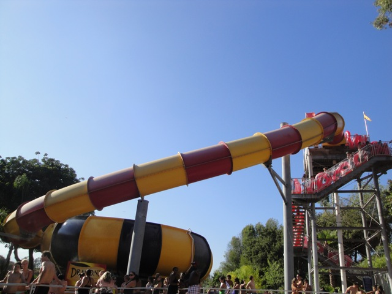
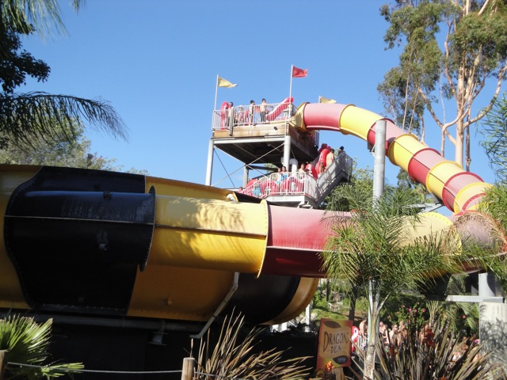
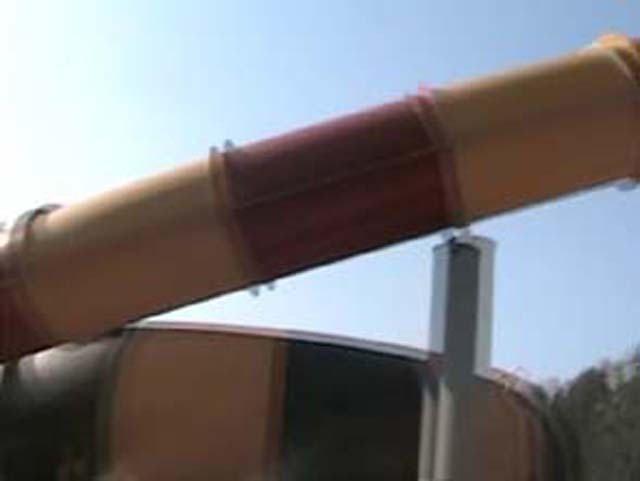
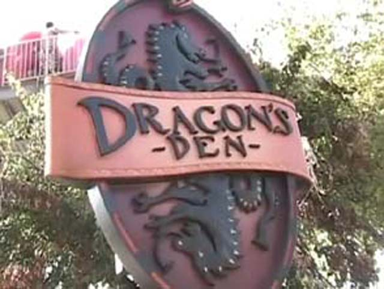

| |
Dragons Den Photos

We're here at Raging Waters, where we'll be reveiwing Dragons Den. The Staple Waterslide at all of the Raging Waters Waterparks. It's a tube bowl slide. So basically, you grab your tube, head up the stairs. While climbing the stairs, you can see the bowl and the dragon in the center of the bowl. Then you get to the top where you see a big curved drop into the bowl. You grab your tube, plop it in the water, then when its clear, the worker pushes you down into the drop. The drop is fun. but it's not that much. It's mostly just to speed you up. There's no weird stomach feeling or anything. Once you make it to the bowl, you take a couple rides around the bowl. Then you go down a little bonus drop and hit a water curtain. And if you're really unlucky, you may just have to push yourself out of the bowl. But that only happened once to me. I would recommend riding this if it has a short line or have never been on a Toilet Bowl.
7/10
Location: Raging Waters
Opened: 2004
Built by: ProSlide
Last Ridden: August 22, 2021
I have ridden this exact same ride at the following waterparks.
Cowabunga Bay (Las Vegas)
Golfland Sunsplash (Roseville)
Dragons Den Photos





Home
|